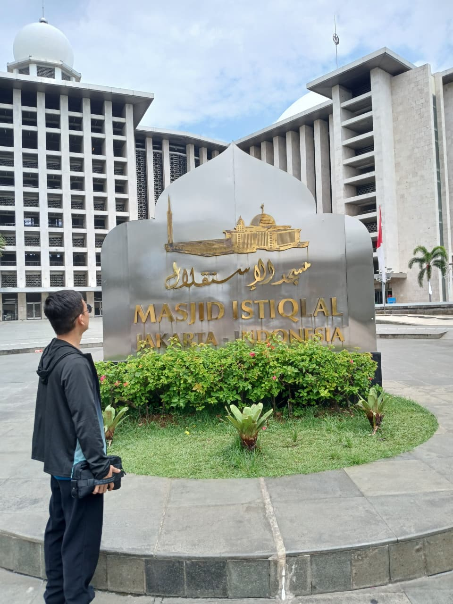

Saya tertarik pada cybersecurity, computer network, web development, serta eksplorasi teknologi melalui pembelajaran dan pengalaman praktik.

Halo! Saya Rahmad Wahyudi, seorang mahasiswa Teknologi Informasi yang memiliki ketertarikan mendalam pada dunia *Cybersecurity* dan *Web Development*. Saya selalu antusias untuk mempelajari teknologi baru dan mengaplikasikannya dalam proyek nyata.
Selama masa kuliah, saya aktif mengikuti berbagai pelatihan dan sertifikasi untuk meningkatkan skill praktis saya. Saya percaya bahwa kombinasi antara teori akademik dan pengalaman praktik adalah kunci untuk menjadi seorang profesional di bidang IT.
Masukkan email Anda
Tambahkan profil LinkedIn
aliakbar044q-sys
Ali Akbar
Cybersecurity, Network, Infrastructure, dan Web Development.
Hima TI • HIPMI PT
3.79 / 4.00